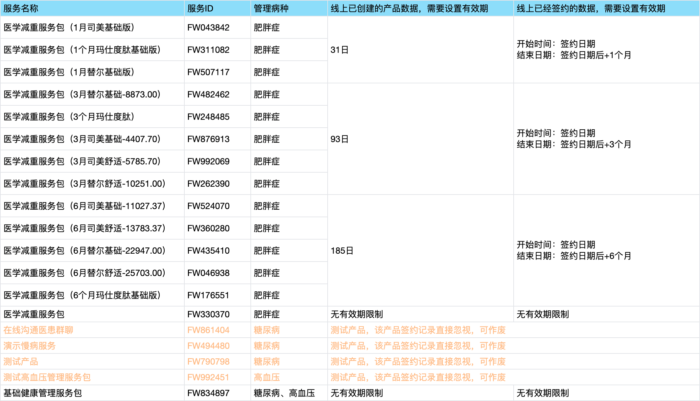

处理事项1：
1、所有已创建的服务产品， 需要填入「管理病种」和「签约有效期」
2、以下服务产品的签约记录， 需要填入「有效期」
处理事项3：
1、来源为“减重管理”的任务，且计划执行时间在上线日期之后的，需要删除
且只留计划执行日期最近的1个任务，多余的删除
处理事项2：
由于线上的签约记录由于转签，已经发生混乱，故需要进行 原签约记录的复原：
1、针对签约团队是“泰安中心医院管理团队”的签约记录
- 只保留“服务产品：基础健康管理服务包”，其他服务包均不需要
- 其签约时间为“最早的签约记录的签约时间”
- 其有效期：无限
- 其主责健管师为签约时间最新的签约记录上的
2、针对签约团队是“小青蛙”的签约记录
- 找到签约时间最早，且签约产品只有一个的记录，作为签约产品
- 其签约时间和有效期开始日期，为该条签约记录的签约时间
- 其有效期结束时间为该开始日期+对应有效期
- 其主责健管师为签约时间最新的签约记录上的
1223新增
